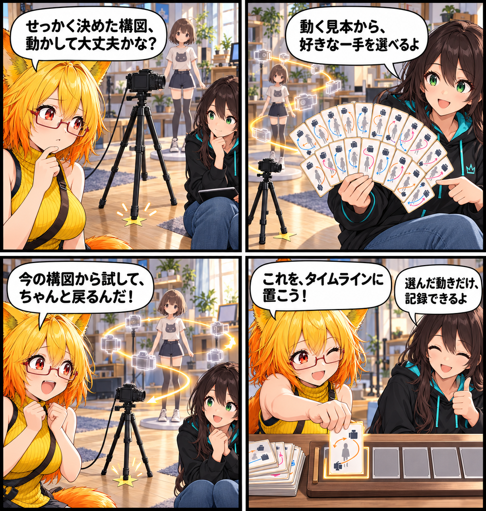

動く見本から、カメラの一手を選ぶ
Desktop向けのカメラモーション編集を追加しました。18種類の動きを、名称だけではなく動く模式図から選び、今つくっている構図を基準にプレビューできます。
main です。集計終了時点のHEADは e865a85c76e9c5ac31c2f90579234171bc6a2409、期間内コミットは1件でした。未コミット差分は期間内の実装事実として確認できないため、実績には含めていません。
動きの名前より、まず見本を見る
撮影・出力の中に、通常の「カメラ」と分けた「カメラモーション」タブを用意しました。そこでは人物撮影・基本・演出を含む18種類のプリセットを、同じカード一覧で見比べられます。OrbitやDolly、Craneのように位置を動かすものだけでなく、Pan、Tilt、Zoom、Trackingなども、動く模式図で雰囲気をつかめます。
カードを選んだ後は、時間、距離、高さ、角度、FOV、イージング、注視対象などを調整してプレビューします。見本を眺めて「この感じかも」と選び、その場で細部を詰めるための入口です。
構図を壊さずに、ひとまず試す
プレビューを始めるたびに、現在の撮影カメラの位置・向き・FOVと、選択中アバターの最新Boundsを取り直します。既定の自動フレーミングを使う場合も、今のカメラの向きとFOVを保ちながら開始位置を計算するため、以前の別の構図へ勝手に戻すことはありません。手動で決めた構図を使いたいときは、自動フレーミングを切ってそのまま試せます。
プレビューは確認用です。終わると、カメラの位置・向き・FOVは元に戻ります。気に入った動きだけを明示的にVASタイムラインへ追加するので、「試しただけの動き」が記録に混ざらないようにしています。
今回の範囲
実装対象はDesktopです。VR用のHMD UIは今回の対象外として保留しています。EditModeテストは5件すべて成功し、18種類のプリセット、軌道生成、追従クリップ、独立タブの構成を確認しました。一方で、実アバターでのモーション再生と、保存したVASの映像確認はこれからです。
4コマの話
「動かすと、せっかくの構図が消えてしまいそう」という不安から始め、試写のあとにカメラが小さな星印へ戻る様子を手品のように描きました。最後に、気に入った一手だけをタイムラインへ置くところが、今回の使い方です。
まとめ
カメラモーションを、名前の暗記ではなく動く見本から選び、今の構図を起点に確かめられるようになりました。撮りたいアバターに合わせて少し試し、残したい動きだけをタイムラインへ進める。撮影の試行錯誤を、もう少し気軽にするための入口です。